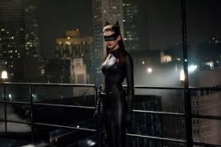
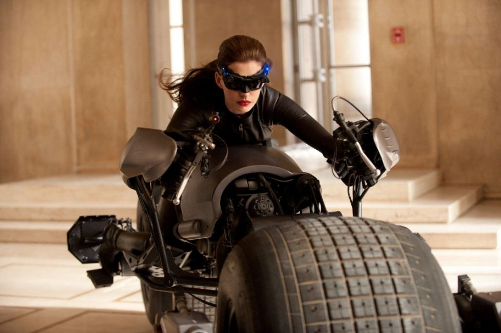
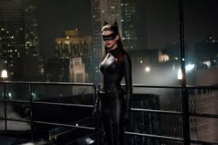
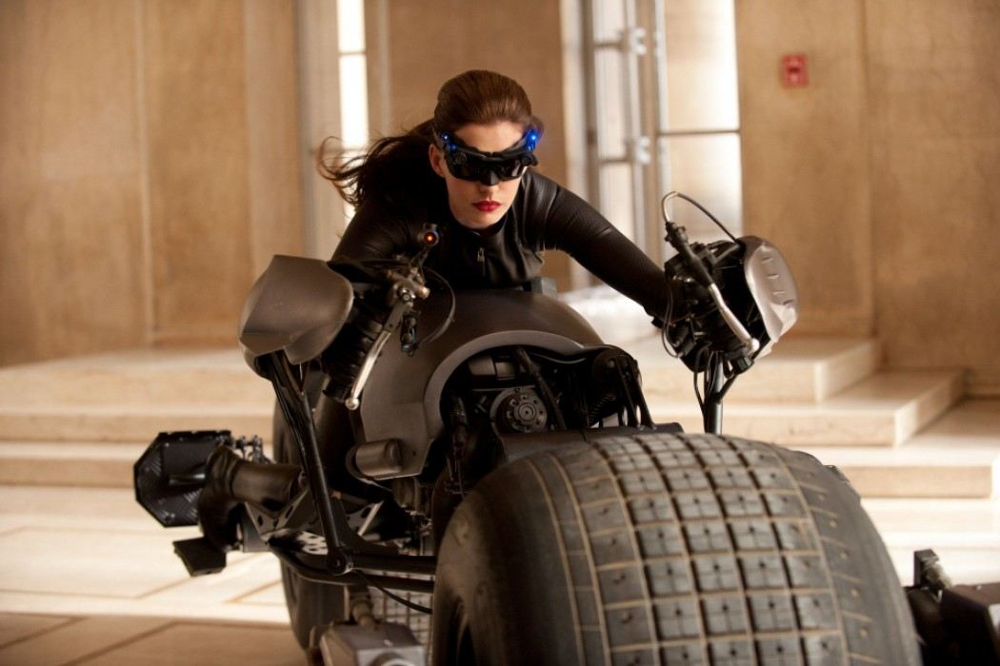

Главная
Задача 4. Создайте div размерами ширина – 100%, высота 250px. Ниже добавьте 4-5 изображений с одинаковыми классами, разного размера. Добавьте событие, которое будет при клике на изображении устанавливать его фоном блока div со свойством background-size:
contain.
 


